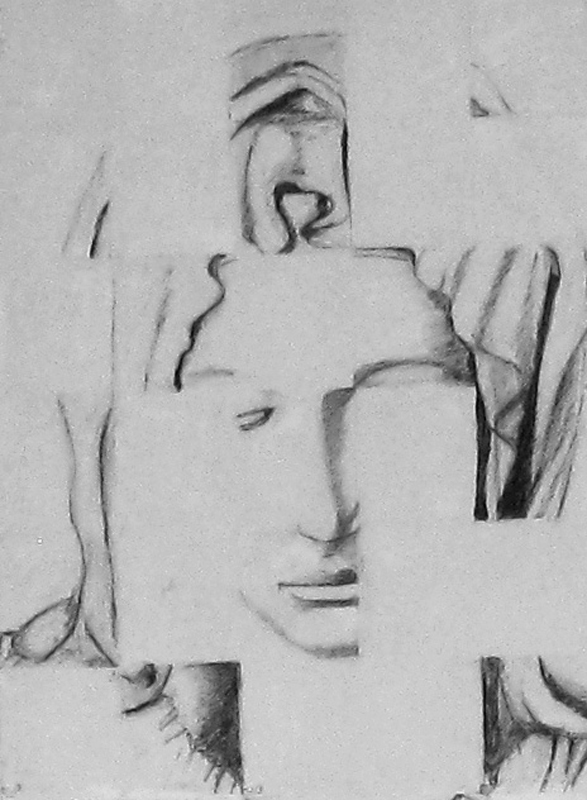
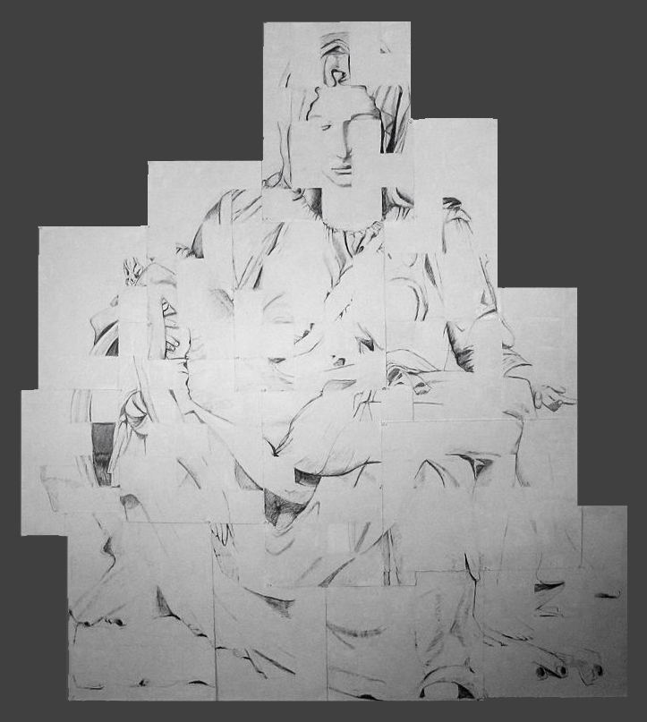

Robin Masi
July 2012
Artist Statement
The Better Angels of our Nature
The title of this series, The Better Angels of our Nature, is from the first inaugural address of Abraham Lincoln, delivered on Monday, March 4, 1861. Lincoln faced secession due to the rift caused by conflict around slavery among the states. It is often quoted in passages about race, religion, and used to encourage the reader to seek the better aspects of one’s self. By combining themes from nature and religious iconography juxtaposed onto a white grid, I hope to offer the viewer a way to reflect upon this passage. The white grid is used here as a reference to the abstract ideal of beauty presented in the writings of Plato who used principles of mathematics to illustrate his concept of the good and the beautiful. Plato’s definition of beauty speaks to an essence or perfect ideal that exists for all of us to access in our own way: the manifestations of which are simply different facets of divine perfection. Here, the white grid is used to order what may seem chaotic or overwhelming and access this aspect of self. It is also used to slow down the eye of the viewer in order to fully process what may seem familiar, misinterpreted, or taken for granted.
Imagery from nature and familiar iconographic statuary are central to this series. During 2007, when my father passed away, I found solace in several majestic groves of very old and tall pine trees in Concord, Massachusetts. Their vast height and powerful presence resembled a natural cathedral. In 1966 my parents brought us to visit many cathedrals in Europe, including where we first saw Michelangelo’s Pietà at St. Peter’s Basilica. Feelings of awe, fear, and power were present during the early spiritual experiences with the cathedrals, The Pietà, and subsequently, in the pine grove. At first, both were overwhelming. Then, as I fully processed each more slowly, I could appreciate their spirit and beauty. I’m interested in evoking that same duality of the overwhelming sense of power with the majestic that I experienced during those early cathedral visits and, more recently, in nature. When visiting natural or religious settings, I often experience a sense of peace, comfort, and unity. Other times, I experience a sense of smallness while being acutely aware of the temporal nature of existence. With this series I hope to convey a small sense of the spirit of both the beautiful and the forceful that is very definition of the sublime. It is through that spirit that, I believe, we can seek, and perhaps find, the better part of ourselves.
Abraham Lincoln closed his speech with this passage:
We are not enemies, but friends. We must not be enemies. Though passion may have strained it must not break our bonds of affection. The mystic chords of memory, stretching from every battlefield and patriot grave to every living heart and hearthstone all over this broad land, will yet swell the chorus of the Union, when again touched, as surely they will be, by the better angels of our nature (Bartleby, 2001).
Robin Masi
